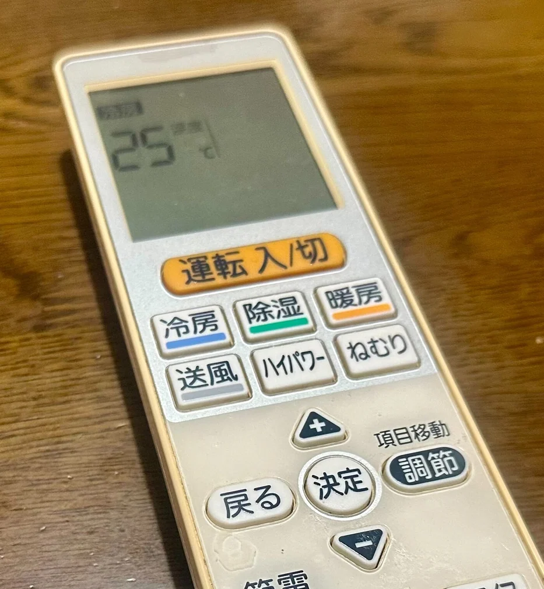
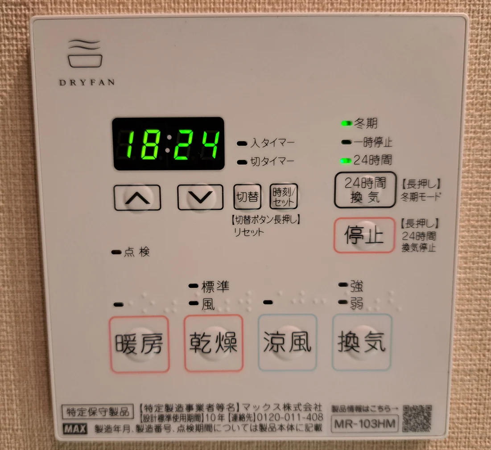

How to
Use the photos to match the labels on your hotel controls. The layout may differ in your room.
Warm your hotel room

At APA Hotel Nagoya Ekimae and APA Hotel Kayabacho Hatchobori Ekimae, look for the air-conditioning controls on the bedside panel. If your room has a key-card power slot by the door, insert your room key first.
- Switch the unit on. Look for ON/OFF or 運転／停止. If the display is already on, leave it on.
- Select heat if the panel offers a mode button. Press Mode or 運転切換 until the display shows 暖房 (heat). If there is a dedicated Heat button, press it once.
- Set the temperature above the current room temperature. Use the ▲ or + beside 設定温度. If the room is 19°C, try 22°C. Give it a few minutes to blow warm air, then adjust one degree at a time. Press ON/OFF when you’re finished.
Room controls: APA Nagoya, APA Kayabacho, Narita Tobu’s reply about heating.
Use the shower and warm the bathroom
For warmer water, start at the faucet. To warm the CR itself, look for a separate bathroom heater panel. The toilet may have its own seat-temperature setting.
Get warm shower water

- Point the showerhead into the tub or drain. On a temperature dial, start on the cool side of the 40°C mark. On a single mixer lever, start toward blue or C. If there are two taps, open cold first and add hot gradually.
- Choose the showerhead and start a gentle flow. Use the selector marked with a shower symbol or シャワー. If water comes out of the tub spout, switch the diverter to the shower position.
- Test the spray with your hand before stepping in. Move the temperature control a little toward red or H, wait for the water to settle, and test again. Leave any 40°C safety stop in place. If only hot or cold water comes out, turn it off and call reception.
- Turn the water off at the mixer. Return the flow control to OFF or 止 and check that the spray has stopped. With two separate taps, close hot first, then cold.
Warm the bathroom air

Look for a wall panel near the bathroom door. If it has 暖房 or 浴室暖房, select it with dry hands, set a timer if offered, and close the door while the room warms. If the panel offers a pre-bath mode (入浴前), use that before you get in. Press Stop when finished.
換気 runs the exhaust fan. If the only switches are the light and fan, ask the front desk whether that bathroom has a heater. A separate bathroom-air heater is unconfirmed for your three bookings.
Warm the toilet seat

Your two APA hotels list heated bidet seats. Look on the toilet’s side panel or wall remote for 便座温度 (seat temperature), sometimes shortened to 便座. If adjustable, select 低 (low) to start and give the seat time to warm. Choose 切 or OFF to turn seat heat off.
On this panel, 温水 sets the bidet spray’s water temperature. If you can’t find a seat setting, ask reception to show you the control for your model.
Equipment guides: APA bathroom fittings, TOTO bathroom heating, TOTO seat and spray settings (PDF).
Photo credits and licenses
- Room heater remote by Nesnad. Cropped and converted to WebP. CC BY 4.0.
- Thermostatic shower mixer by M.Minderhoud at Dutch Wikipedia. Resized and converted to WebP. CC BY-SA 3.0.
- MAX bathroom heater panel by RuinDig/Yuki Uchida. Cropped and converted to WebP. CC BY 4.0.
- TOTO toilet-seat control panel by Benlisquare. Cropped and converted to WebP. CC BY-SA 4.0.


The guide overlays a highlight on each example. The adapted photos retain their respective licenses.